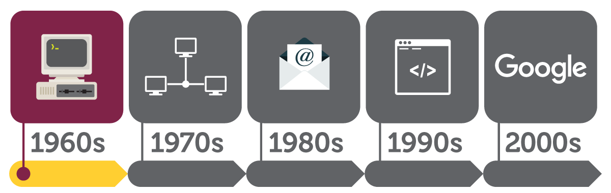

On October 4, 1957 Soviet Union launched world first satellite known as Sputnik into space. This made people in America alarmed and they thought Soviet Union is going to win Cold War with this new technology. Experts were concerned about what might happen if Soviet Union attack on US telephone system. Thus, the American federal government formed new agencies such as National Aeronautics and Space Administration (NASA) and the Department of Defense Advanced Research project agency (ARPA) for coordinating America’s activities in space and to facilitate research in technology with potential military applications. 
At MIT a graduated student Leonard Klienrock, began applying queueing theory for data transmission. Queuing theory it’s a fantastic tool for evaluating the computer transmission system. Klienrock idea was an adorning site for Licklider’s vision. In 1952, Claude Shannon built a machine, which modelled a mouse finding its way through a maze. Based on that in 1965 a researcher at RAND, Paul Baran developed a way of sending information from one computer to another called packet switching. Packet switching breaks data down into blocks, or packets, before sending it to its destination. That way, each packet can take its own route from place to place.